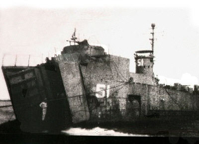

|
|
|
|

Lt(jg) Wilson Dickson looks over the beach at Lemery, Luzon, PI
|
|
|
|
|
|
|
|
|
|
|
|
|
Victory Medal |
|
Campaign Medal |
|
|
|
Combat Action Ribbon+
|


LSM 51 was built by Brown Shipbuilding Company. The keel was laid 22 June 1944. It was launched 24 July 1944, and commissioned 11 August 1944. Decommissioned 8 May 1946 at Terminal Island, San Pedro, CA.
| Planes Downed: |

| POTTS, James O. LT (CO) Texas |
TREECE, Warren H. (Ens) (XO) Oregon |
| DICKSON, Wilson M. (Ens)( EngO) Kilgore, TX (f) |
ELLSWORTH, Stuart M. (Ens)(GunO) Conneticut (F) (Deceased) |
ENLISTED PERSONNEL
| BROWNE, Milton C Savannah, GA |
BUKOVICS, Steve J.* * Pennsylvania |
CAIN, Alfred G. Gahanna, OH |
| CAIN, Paul T. Cincinnati, OH |
CAMPBELL, Charles California |
CUNEO, Roy New York, NY (M) |
| DUCSAK, Bella J. Woodbridge, NJ (K,M) |
DUSO, Woodrow P. East Hampton, MA |
FENTON, Howard C. Staten Island, NY |
| FORSYTH, Dozier P. Green Cove Springs, FL (F) |
FRYE, Robert L. Fly, OH (F,K) |
GARDNER, James E. Pheonix, AZ |
| GHILARDI, Anthony P. Cambridge, MA (F) |
GLOVER, Robert A. Tarrant, AL (F,M) |
HALVERSON, Bert G. Gainsville, FL |
| HILLER, Joseph F. Philadelphia, PA (F) |
HORENT, Lucien F. Woonsocket, RI |
KANN, John S. Bridgeport, CT (F) |
| KAROLCZAK, Micheal Philadelphia, PA (F) |
KASAK, Rudolph E. New York, NY (F) |
KELLY, Russell W. Lindenwold, NJ |
| KENNESON, Albert J Waterbury, CT (F) |
KICINSKI, Alexander Detroit, MI (F) |
KINER, Clifford S. Mechanicsburg, PA |
| KREBBS, Peter J. Cheviot, OH (M) |
LIBRITZ, Jerry M. * New York, NY |
MANTHIS, Howard E. Princeton, WI (F) |
| MASSEY, Claude E. Lafayette, IN |
MAYS, William C. Virginia City, VA (F) |
McGUFFIE, William B. Ragland, AL (K,M) |
| MONGOMERY, Clyde B. Cincinnati, OH |
MOTLEY, Roland Georgetown, KY |
NUNNALLY, Paul A. Green Bay, VA |
| O'BERINER, Emil R. Waterbury, CT (F) |
O'DEEN, Kenneth O. Gary, IN (F,K) |
PRESCOTT, Mack B. Columbus, GA (F,K) |
| SAGE, Jerry L. Fort Wayne, IN (M) |
SENTILLES, Irwin F. New Orleans, LA (F) |
SHERRILL, Joe E. Parkton, NC (F,K) |
| SMITH, Raymond Waskom, Texas |
STEINBECK, William K. Weston, WV (F,K) |
SWAIN, Walter Marvin Victoria, VA (F) |
| WAKEFIELD, Robert S. Cincinnati, OH |
WALSH, Gerard T. East Orange, NJ |
WILSON, Cranston South Whitley, IN (K) |
| WINTERS, Robert H. Lawrenceburg, IN |
CREW JOINING AFTER LITTLE CREEK
OFFICERS
| BRYANT, Robert E. (Lt Jg) Binghamton, NY | GORDON, Harold W. (Ens) Portsmouth, OH (M) |
| MAGGARD, Roland E. (Ens) USA | NESTER, William C. (Ens) Philadelphia, PA |
| RAND, MARITT J. (LT)(CO) San Diego, CA |
ENLISTED PERSONNEL
| AIREY, E. L. USA |
ARCHAMAULT, R. A. USA |
BAIR, Homer F., Jr Greenburg, PA |
| BARBER, William J., Jr USA |
BETSO, A. V. USA |
BIERBACH, Robert D. Greely, CO (F,N) |
| BOONE, H. E. Mule Shoe, TX |
CARPENTER, Merlyn F. USA |
GIBBS, GENE W. USA |
| GRANT, Walter D. USA |
HUGHES, C. R. USA |
JARED, Samuel M. McEwen, TN (M) |
| JOHNSON, Earl M. USA |
KUSZESKI, B. V. USA |
LALKA, Paul N. USA |
| LANDERNO, Willard P. Melville, LA |
LAWSON, A. USA |
NAEGEL, Raymond F. Cincinnati, OH |
| NICHOLAN, Frank F. Fall River, MA |
O'CONNER, Daniel T. Boston, MA |
PIECHOWIAK, Arthur Michigan |
| SCARCELLI, R USA |
TOTH, Steve L. South Norwalk, CT (F) |
WHITESIDE, Billy G. Detroit, MI (F) |
| YOKIS, Daniel A. Chester, PA (F,N) |
ZAJAC, F. E. USA |
[ Previous | Next | Next 5 Sites |Random Site] |
SPECIAL THANKS : To John Kann, Willam K. (Bill) Steinbeck and Wilson M. Dickson for rosters, pictures and articles. To my son Joe for his help in construction of this Web Page.


 bravenet.com
bravenet.com